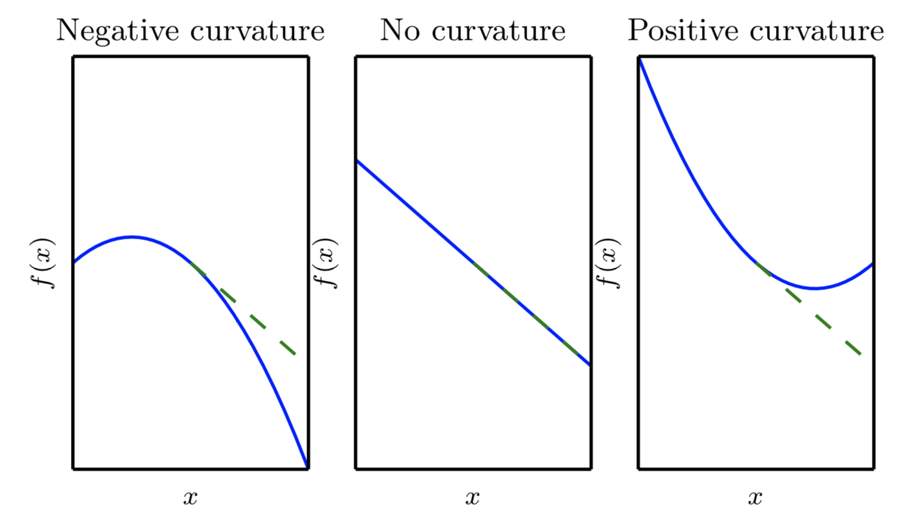

泰勒公式是将一个在x=x0处具有n阶导数的函数f(x)利用关于f(x−x0)的n次多项式来逼近函数的方法。
1. 一维的泰勒公式
若函数f(x)在包含x0的某个闭区间[a,b]上具有n阶导数，且在开区间（a,b）上具有（n+1）阶导数，则对闭区间[a,b]上任意一点x，成立下式：
f(x)=0!f(x0)+1!f′(x0)(x−x0)+2!f′′(x0)(x−x0)2+n!f(n)(x0)(x−x0)n+Rn(x)
其中:
x是一个标量。
f(n)(x)表示f(x)的n阶导数
等号后的多项式称为函数f(x）在x0处的泰勒展开式
剩余的Rn(x)是泰勒公式的余项，是(x−x0)n的高阶无穷小。
2. 高维的泰勒公式
f(x)=f(x0)+(x−x0)g+21(x−x0)⊤H(x−x0)+...
其中:
x是一个向量
g是f在x0处的梯度向量，即gi=∂xi∂f(x0)
H是Hessian矩阵，Hij=∂xi∂xj∂2f(x0)=∂xj∂xi∂2f(x0)=Hji，H是一个对称矩阵。
3. 泰勒公式二阶项的几何意义
当x非常接近x0时，二阶以上的项可以忽略，只考虑前三项，分别是常数项、一阶项、二阶项。
同时为了简化总是，认为x是一个标量。
f(x)=f(x0)+(x−x0)f′(x0)+21(x−x0)2f′′(x0)

根据公式的前两项画出来的是绿色的虚线（一个直线）。
根据公式全部三项画出来的是蓝色的曲线（一个二次曲线）。
蓝线与绿线的差异来自二阶项。
4. 泰勒公式二阶项的作用
- 牛顿法
- 分析临界点的类型